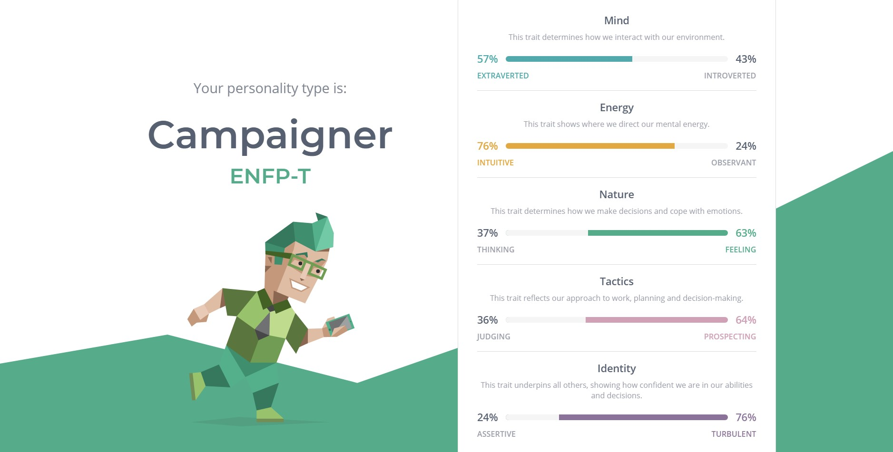
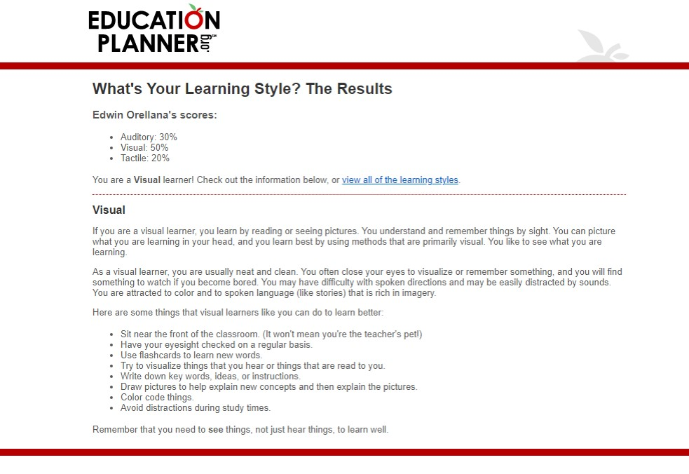
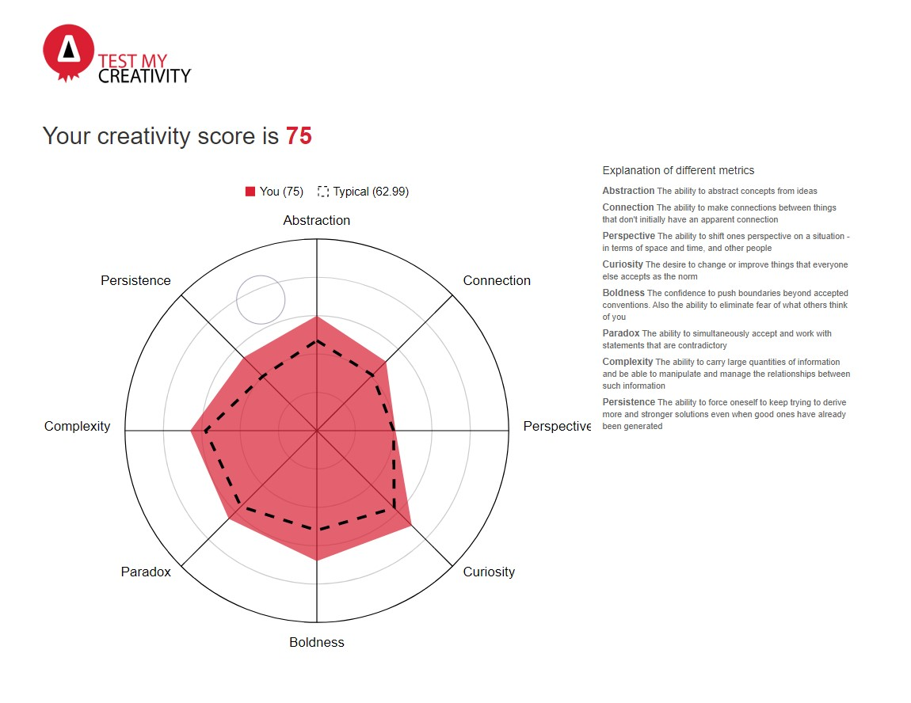

Name: Edwin Vladimir Orellana
Student Number (RMIT University): S3429574
Student Email: S3429574@student.rmit.edu.au
Date of Birth: 02/03/1995
Nationality: El Salvadorian
Place of Birth: San Salvador, El Salvadorian
Languages Spoken: English and Spanish (Castellano)
Education:
- VCE (Graduated from Sunshine Secondary Collge in 2012)
- Certificate II in Automotive (Completed from 2011-2012 while attending VCE)
- Certificate III in Automotive (Apprenticeship throught the VACC, completed in 2016)
- Unit for Certificate IV in Electrical Diagnosistics in Automotive Systems (Completed in 2016 at Boxhill Institute)
My name is Edwin Orellana, but everyone calls me Eddie, I currently am an Automotive Technician for Lexus Australia. I have been working in the Automotive Industry for over 9 years now, I have had the opportunity in these past few years to work for many Automotive brands such as Mazda, Volkswagen, and the Mopar Group (Jeep, Dodge, Chrysler, Fiat and Abarth). Apart from my love of cars I also do love technology, the I.T industry is growing more day after day, and I want to begin my journey to explore it. During my time as an apprentice one of my mentors would constantly express a saying that resonated with me and now, I try my best to apply it in my life daily “A day in which we have learnt nothing or not helped someone is a day wasted”. My goal is wanting to expand my knowledge and help those around me whenever the opportunity is given.
- Working on and modifying cars
- Playing Guitar (I am self taught)
- Listening to Music (I am always trying to expand my library and Genres)
- Playing Video Games (PC,PS4,etc)
- Watching Anime
My Personality:
My Learning Style:
My Creativity:
• What do the results of these tests mean to me?:
What these results mean to me is that I am an individual that is well balanced between working alone on a task or completing it with a group/team. Its shows that I am aware and conscious of how others around me are feeling. Also, it shows I am one who wants to help and assist when I can in however I can and happy to follow instruction, find new solutions and see not just my own perspective but others as well. My results also show that I am a Visual Learner and that through my vision that I can remember, learn, and understand things better.
• How do you think these results may influence your behaviour in a team?
• How should you take this into account when forming a team?
• What is your interest in IT? When did your interest in IT start? Was there a particular event or person that sparked your interest?
My interest in the Information Technology industry is the ever-expanding benefits and impact it has to our everyday lives. From the smallest apps we frequently use on our phones and portable devices to the advancements and improvements technology has brought us in hospitals, communication and even safety features in something as common as our transportation vehicles. During my time in the automotive industry, I have seen so many changes and improvements done in both the features, internals, and drivetrains of the vehicles I have worked on, to the equipment and diagnostic methods we use to work on them thanks to advancements in technology. This has caused me to be interested in learning more about how technology is also changing the world in other areas as well. Technology is constantly growing and one day I want to assist in its growth. The event that really opened my eyes to see that Technology is not just for entertainment and pass times, but a very important tool was when my nephew Sebastian was born in August of 2016. Unfortunately, my nephew was born with a Diaphragmic Hernia and part of his intestinal system was in the area where his left lung should have been. As a result of this my nephew passed away three days later, but during this hard time I saw how useful Technology can be. I saw how the advancements in the equipment used in the Hospital was assisting my nephew, other unwell children, and their families. I saw how through social media and other communication platforms my brother and his wife received an overwhelming amount of support from family and friends. Also ordering food and other necessities we needed were made easy through apps in our devices, this way our family could stay together as much as possible during this difficult period.
• Why did you choose to come to RMIT?
There are many reasons why I chose to come to RMIT. One of the reasons comes from when I was in year 9 (in 2009) and all the students in my year level were made to participate in the “City Centre Project”. During the 2 weeks we participated in the program we had to travel into Melbourne CBD every day, I remember coming out of Melbourne Central station and while traveling towards our desired destination we walked past the RMIT University Melbourne City Campus Building. I remember being captured by the unique design of the building and since then my interest grew for RMIT. As the years went by my path took me into the Automotive industry, but I had many friends and family that attended RMIT. From each of them I heard so many positive and wonderful things about the university and from it my interest continued to grow. I recently found myself at a point in my life where I could attend a university for the first time and naturally RMIT still remained as my first choice.
• What do you expect to learn during your studies?:
What I wish to learn during my studies is a greater understanding of Information Technology. From the benefits and convinces it brings to those using the apps, software’s, devices etc. To the work that goes into creating these products. The methods required to take an idea and make it into a reality. I may not know much at this moment, but I want to grow, learn, and make the most of this opportunity that I can.
Overview:
Motivation:
Descritption:
Tools and Technologies:
Skills Required:
Outcome: